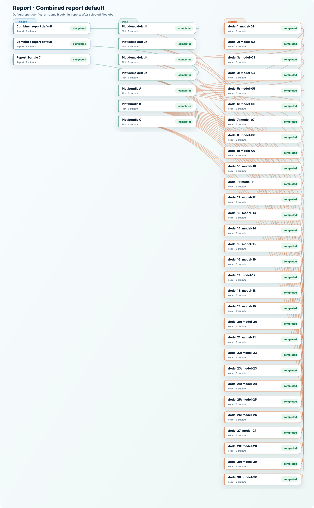

Report · Combined report default
Published flow package. Run make to restore outputs from the release bundle and verify checksums.

Published flow package. Run make to restore outputs from the release bundle and verify checksums.
